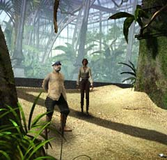

| 概要 | 地図 | |
| 淡いヒント集 | ヒント集 | 的確なヒント集 |
| 攻略最短ルート | Syberia 攻略へ |
| << 前の段階へ | 地域選択へ | 次の段階へ >> |
バロクシュタット
|
大学にて(前半)
オスカーに呼ばれて、機関車内に入ったあなたは、大学側からの伝言を彼から聞くだろう。あなたは大学に行かなくてはならない。大学は様々なヒントや謎があふれている。しかし、どんなときも道は一つしかないのだ。ここでやらなくてはならないのは、 ・学長との接触 ・資金援助の変わりに、学長達の依頼を受ける ・図書館で本を2冊入手する ・ポンス教授との接触 ・ある植物の有無の調査 である。特に、入手できる書物とポンス教授の話は重要なのでしっかりと聞くことをおすすめする。
学長達

・彼らは機関車をすぐ動かすように要求してくるだろう。そこをうまく突くのだ。 ・機関車を動かすために必要な資金を彼らに要求してみよう。きっと、変な依頼と引き替えに飲んでくれる。 ・あなたが調べている植物について彼らは知っているかもしれない。聞き出すためには、彼らの言うとおりに動く必要もあるだろう。
図書館
 
・図書館には重要は本が2冊ある。 ・たった2冊だけである。根気よく探せば必ず見つかる。 ・もし、手に入れることができたら必ず中を読んでおこう。そうすれば、あなたはある植物について興味を持つに違いない。
ポンス教授

・彼は親切な人間である。何か知りたければ積極的に尋ねるべきだ。 ・彼は、あるものを見るのが夢だと語っていた。それを彼に見せたらきっと喜ぶに違いない。 ・あなたが探している植物について彼は知っているかもしれない。聞き出すためには、彼の言うとおりに動く必要もあるだろう。
駅長
 ・ある植物を育てている、駅長に違いないとあなたは確信するはずだ。 ・しかし、彼はそれを認めようとしない。どうすれば、告白してくれるだろうか。 ・重ね重ね言うが、聞き出すには彼の言うとおりに動く必要もある。 |
| << 前の段階へ | 地域選択へ | 次の段階へ >> |
| 概要 | 地図 | |
| 淡いヒント集 | ヒント集 | 的確なヒント集 |
| 攻略最短ルート | Syberia 攻略へ |
Syberia
| 目次へ戻る | ページの上部へ |